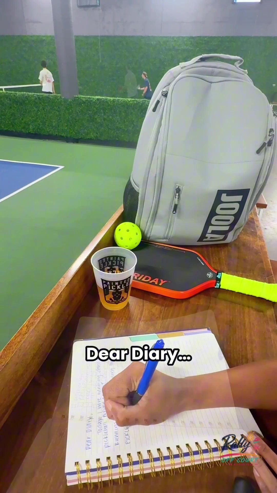

Project File 03 / Create
Dear Diary, for Montis
Concept / Voice / Creator / Editor / Product storytelling
An authored creator film where the concept, voice and edit are part of the proof, not hidden behind the finished post.
← Back to Casting Sheet
The Proof
Authorship on screen.
The file stays under CREATE because Lauren’s role extends across concept, voice, creator performance, edit and product storytelling.
The emphasis is the finished authored film and the work embedded in making it, without attaching unsupported performance claims.
File Notes
What it adds.
The narrative voice is part of the creative treatment rather than a neutral product read.
Editing is included in Lauren’s credited role on the live portfolio.
Portfolio video, poster and approved production cut used across Season Zero.
Next File / Activate
Take it outside.
Next: proof built inside a real live activation environment.